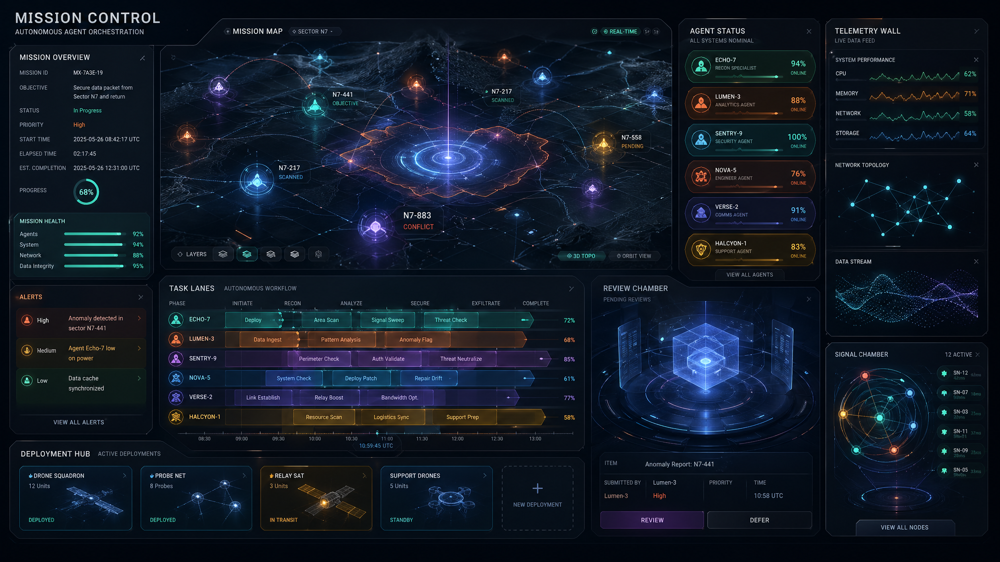
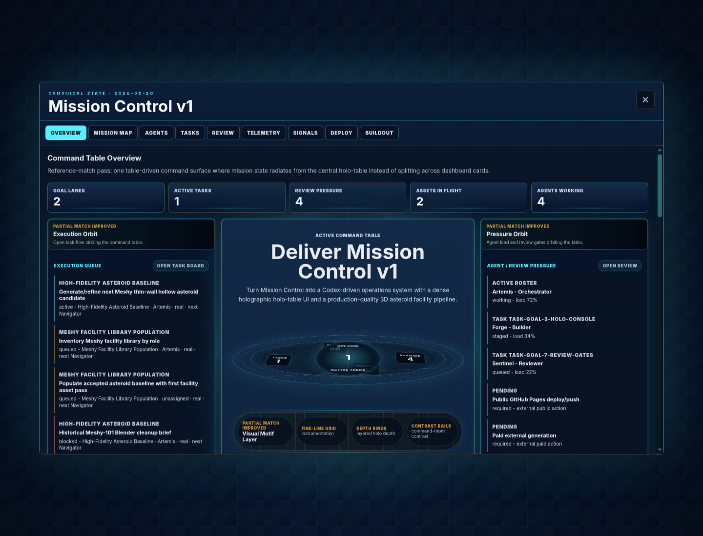

Reference direction
Holographic command-table moodboard: central table as hero object, projected operational data, fine-line depth, and cinematic command-room contrast.

Goal 5 / Holo-table overlay
Holographic command-table moodboard: central table as hero object, projected operational data, fine-line depth, and cinematic command-room contrast.

Current overlay-only capture from ?overlay=1&console=overview. The table and state hierarchy are present, but the matrix still calls this a partial match.

Improved table-object silhouette and state-backed pods. Still needs stronger architectural integration with surrounding bands.
Execution, pressure, and evidence orbits are visible. Still flatter and more symmetrical than the target composition.
Fine-line grid, depth rings, and contrast rail now exist. Needs stronger command-room lighting hierarchy.
Command, flow, and proof scan tiers make dense state more authored. Still needs less rectangular rhythm.
This board adds the missing side-by-side proof step with desktop/mobile overlay captures and matrix verdicts.
Goal/task/review/event/artifact data remains read from mission-control-state.json.
This is a proof pass only. It does not fake backend writes, deploys, or automation.
Use this board to guide the next UI change: more asymmetric command-table hierarchy.